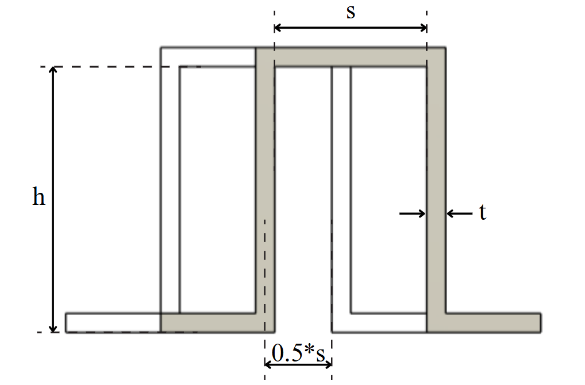
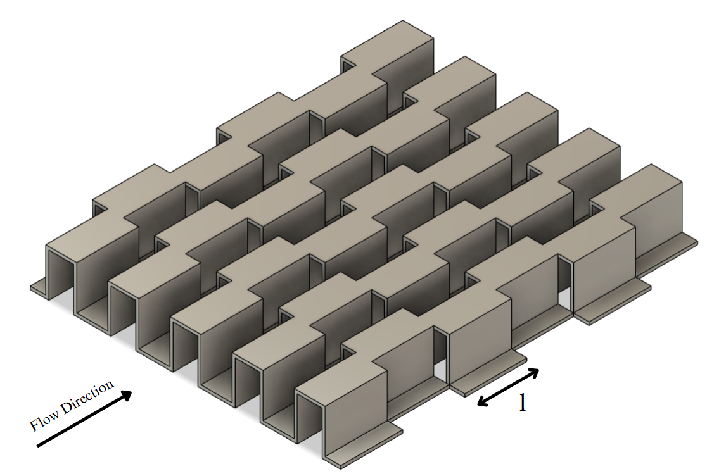

This page implements the continuous numerical correlations (CFD-based) for offset strip fins from the referenced study. It accepts geometry and flow inputs and returns predicted Colburn j and friction f factors. The correlations are valid for gases/fluids with Prandtl number in 0.5–15.

